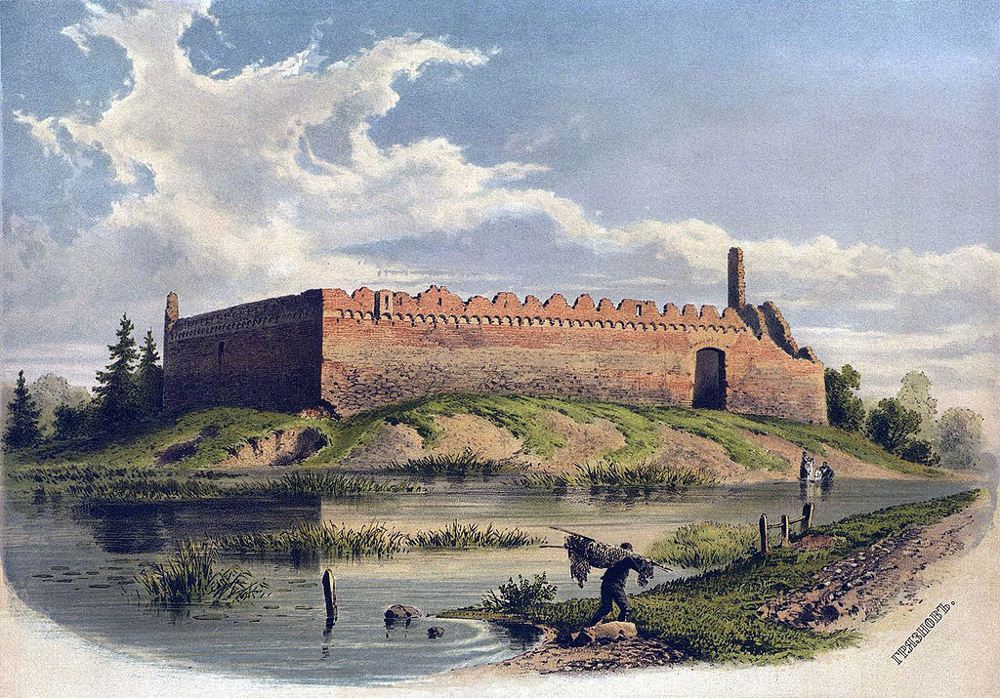
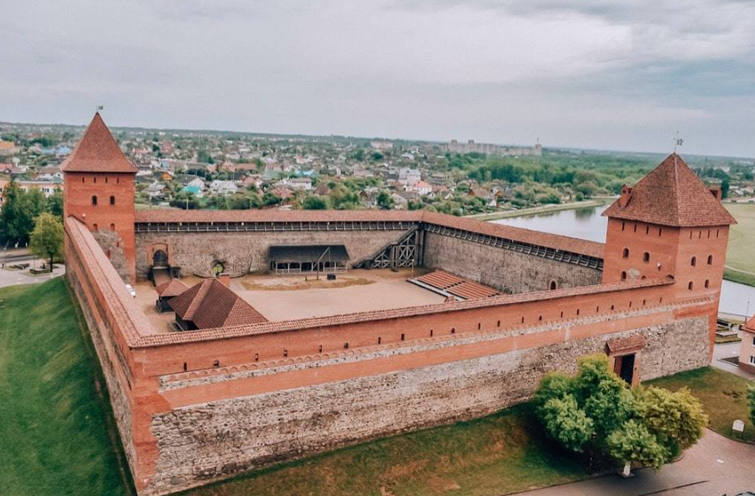

Строительство Лидского замка было начато в 1323 г. великим князем Великого княжества Литовского Гедемином. Замок возводился на насыпном песчаном холме, окруженном болотистыми берегами рек Лидея и Каменка и рвом, соединяющим эти реки с юга и отделяющим замок от города.
С момента постройки в начале замок использовался как военное укрепление: в нём размещался гарнизон, защищавший северные границы Великого княжества Литовского от крестоносцев Тевтонского ордена. Разумеется, он пережил множество войн и осад. Его брали немцы, шведы, русские, татары, литовские мятежники. В результате, в XIX веке от него остались лишь живописные руины. Так что нынешний вид — новодел XX века.
Лидский замок был построен из прочного кирпича вперемешку с бутовым камнем. В плане постройка представляла собой неправильный четырехугольник, по краям которого размещались две угловые башни. Самая длинная стена - та, что с северной стороны. Ее длина составляет без малого 100 метров. Замок был окружен рвом шириной в 20 м, который обособил постройку от города. Внутри замкового двора находилась церковь для православных, здание суда, архив, несколько жилых и хозяйственных построек. Также жилые помещения расположились внутри башен на верхних этажах.
За всю свою многовековую историю замок Гедимина неоднократно отбивался от нападения многочисленных врагов, что на сегодняшний день придает ему необыкновенную атмосферу духа стойкости и мужества. Однако не все сражения проходили гладко для этого древнейшего строения. В 1702 году замок был разрушен из-за взрыва на одной из башен.
Конец XIX века был для замка не лучшим временем. Он подвергся вандализму – местные жители разбирали стены и продавали кирпичи. Но вскоре эти действия были прекращены, и уже в 20-е годы XIX века замок был немного обновлен польскими реставраторами. В летний период здесь то и дело останавливались приезжие зоопарки и цирки, а зимой на территории замка устраивали каток.